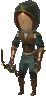

CASE STUDY · CUSTOMER-FACING BUILDS · IS218, FALL 2026
Arena Climb
A Knight / Archer / Wizard game where you climb ranks against a computer that reads your habits.
- MY ROLE
- Solo: research, decisions, build (AI-assisted)
- STACK
- Flask, Flask-Login, PostgreSQL, pytest, Playwright
- STATUS
- Plan done · rebuild in progress



Fighters rendered in Blender from free CC0 models (Quaternius), then pixelated.
Problem
Rock paper scissors settles arguments, but nothing makes you play a second match. I wanted a reason to keep playing that still fits in one minute.
Who it was for
College students filling a few minutes between classes on their phones. I compared this audience with a once-a-day “Wordle-style” player and chose the quick, 2048-style loop because I could test it with classmates.
What I built
- Sign up, sign in and sign out with Flask-Login; passwords hashed by the framework.
- Best-of-5 matches where the server decides every round; the browser only sends a pick.
- Ranks that get harder: random → win-stay/lose-shift → predicts from your past picks (Strategy pattern).
- Saved results, a private dashboard and account maintenance.
- Cut on purpose: coins, gear and a shop moved to the backlog to keep the core solid.
How I checked it
| Check | Result |
|---|---|
| Game rules, opponent and match logic (first build) | 67 PASSED · NOV 16 |
| Two-user privacy and password-change tests (Flask rebuild) | PLANNED |
| A/B playtest: does “1 star to the next rank” make people play again? | NOT RUN |
| Keyboard-only play and 375 px phone layout | PLANNED |
Results come from the public project record. Anything not run says so.
What’s next
Finish the Flask rebuild, run the playtest with classmates, and add GitHub Actions so every check runs on each push.